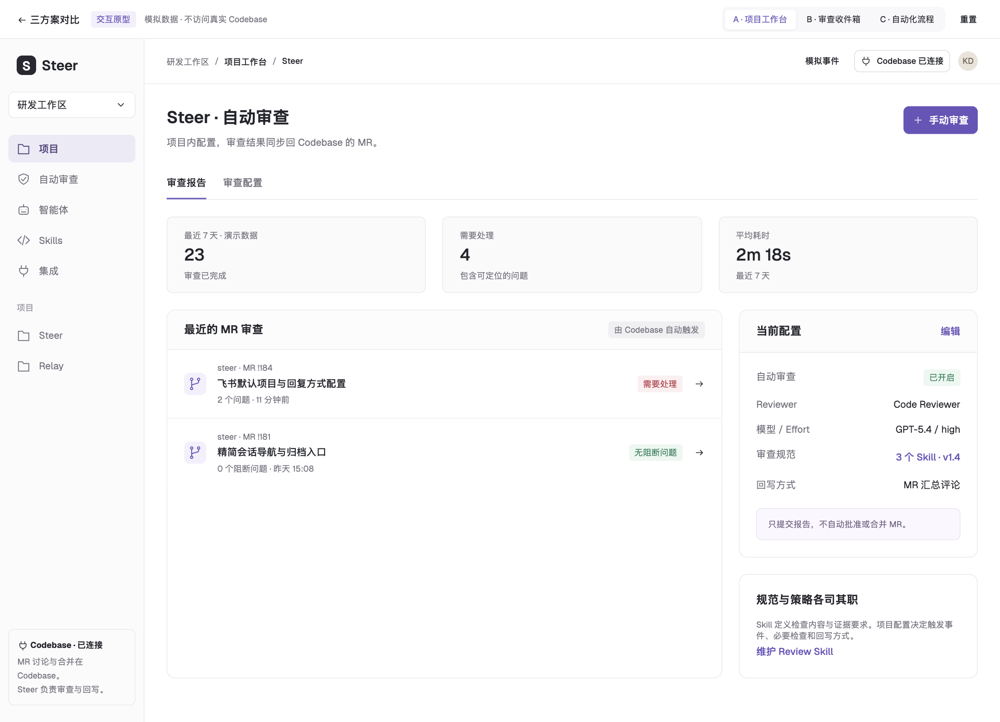
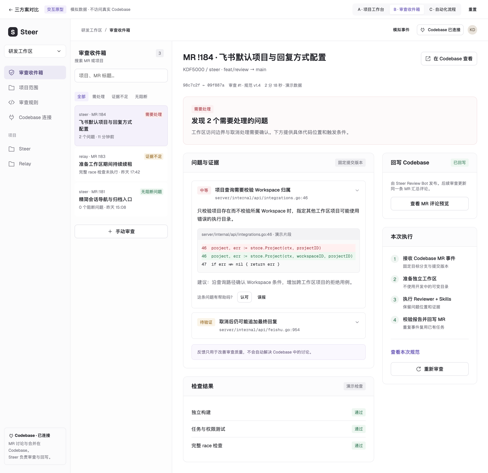
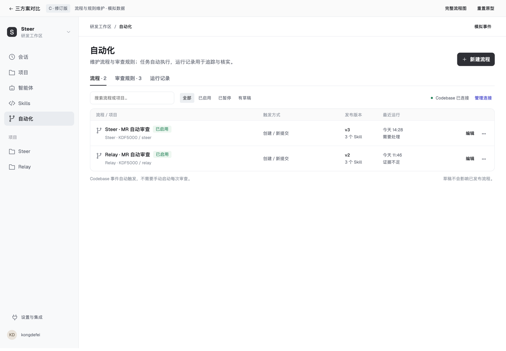

项目工作台
进入项目，配置自动审查。报告与规范都在项目上下文中，适合按仓库管理研发流程。
体验 A 方案查看完整流程图Codebase × Steer
三套完整的交互方式，覆盖接入、Review Skill 维护、任务执行与报告回写。比较的是如何组织工作，而不是同一套产品的三个页面。

进入项目，配置自动审查。报告与规范都在项目上下文中，适合按仓库管理研发流程。
体验 A 方案查看完整流程图
多个仓库的 MR 汇聚成队列。点击即可查看问题、证据与回写状态，适合日常跟进大量审查。
体验 B 方案查看完整流程图
首页维护流程与规则，支持草稿、发布和暂停。任务由事件自动触发，运行记录只用于按需核实。
体验 C 方案查看完整流程图验证 Codebase 连接，选择 Reviewer，编辑 Skill 草稿并发布。可切换仓库同步的只读规范。
输入演示 MR，查看审查进度、代码证据与检查结果，再预览 Codebase 汇总评论。
点击“模拟事件”，体验新提交使报告过期、证据不足、回写失败与重复事件。